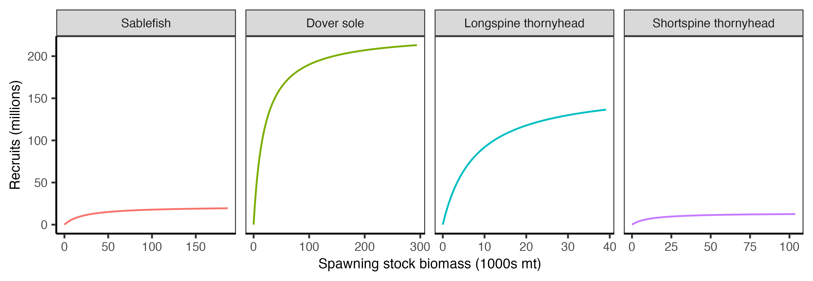

2 Populations data
This section includes a description of the raw input datasets and the parameters considered to run the R routines for the target species population characteristics. These files should be stored and loaded from raw_inputs/{project-name}/POPULATIONS.
There are four main inputs to explicitly characterize the stock populations: their biological traits, their abundances structured by size and age and their spatial distribution. Although not directly life-history parameters, stock price information is also provided in the same folder. Species can also be implicitly characterized in the model, where simulated fishing is not coupled with their simulated population dynamics, but rather defined by a constant catch rate, as explained in the fleet section. However, such implicit species still need to be included in the inputs to feed the routine code, and their parameters can be filled with dummy data.
For our case study, we focus on the DTS complex fisheries. We selected these species because they are the most important groundfish fisheries by volume for trips fishing within the lease areas. The DTS complex is composed of four species in the Pacific Groundfish Fishery, explicitly defined in this analysis:
- Sablefish (Anoplopoma fimbria) — FAO code SAB
- Dover Sole (Microstomus pacificus) — FAO code MIP
- Longspine Thornyhead (Sebastolobus altivelis) — FAO code SJZ
- Shortspine Thornyhead (Sebastolobus alascanus) — FAO code SJU
We also included two implicitly modeled stocks, based on their significant and trackable landings within lease areas, as well as a broader “catch-all” group representing additional catch from our fleet of interest:
- Petrale Sole (Eopsetta jordani) — FAO code EOJ
- Chilipepper Rockfish (Sebastes goodei) — FAO code SGO
- Catch-all “other” stock — analysis code OTH
Below, we describe the contents of each required file to run our analysis.
2.1 Abundance inputs
DISPLACE requires abundances (in thousands of individuals) within 14 size bins. These 14 bins are evenly spaced in length and are identical for all explicit species, despite their differences in body size. Abundances by size are provided in Stock_abundances_at_szgroup.csv. Alternatively, abundances can be specified in 13 age bins using Stock_abundances_at_age.csv. Both files must exist in the input directory. However, only one needs to contain actual data.
The size bins also define three broader size categories (small, medium, and large) which are relevant when specifying other input files such as spatial distribution and stock process files. In our case study, we grouped bins 0:5 as small, 6:9 as medium, and 10:13 as large.
For our case study, we define abundances by size group and therefore populate Stock_abundances_at_szgroup.csv. The age-based file, Stock_abundances_at_age.csv, is included but filled with zeros. Implicit species must be listed in both files, although can be filled with dummy data. In our example, we populate the implicit species’ abundance rows by repeating the values from the first explicit specie. This is required for the R routines to run. However, these repeated inputs are not used by the model and do not affect the results.
The number of fish at length defines the initial populations in the simulation. We obtained these values from the stock assessment estimates of number-at-length in the “natlen” table of the SS3 model output (Figure fig-abundances), and then adjusted them to fit the 14 size bins required by DISPLACE.
Because the stock assessments represent populations across the entire U.S. West Coast, we scale the abundances to represent the proportion of the stock falling within waters off the coast of California. We determined the average percent of the population falling within California waters using the proportions in the bottom trawl survey data (Keller et al. 2017). The annual percent of biomass observed in the survey is shown in Figure fig-prop-in-ca below with the average from 2010-2018 highlighted. The values are as follows: Dover sole (52.3%), longspine thornyhead (72.5%), sablefish (53.7%), shortspine thornyhead (48.1%).
2.2 Biological traits
This section describes the contents of the file Stock_biological_traits.csv and how we populated it for our case study. The file requires actual information only for the explicit species. Implicit species were also included but filled with dummy data, consistent with the approach used for the abundance files, to ensure the R routines can run.
We obtained the life history parameters from the most recent stock assessments available for each modeled species: the 2023 sablefish assessment (Johnson et al., 2023), the 2021 Dover sole assessment (Wetzel and Berger, 2021), the 2019 longspine thornyhead assessment (Adams et al., 2019), and the 2023 shortspine thornyhead assessment (Zahner et al., 2023). These parameters were extracted directly from the Stock Synthesis output files using the r4ss package (Taylor et al., 2021).
2.2.1 Growth parameterization
The growth parameters included in Stock_biological_traits.csv are:
Linf: von Bertalanffy asymptotic length.CV_Linf: coefficient of variation of the von Bertalanffy asymptotic length.K: Von Bertalanffy \(K\).t0: Theoretical age of the von Bertalanffy growth function (VBGF) at which fish would have a size of zero.
DISPLACE expects growth to be specified using a three-parameter von Bertalanffy growth function (VBGF): \[ L_t = L_\infty \left(1 - e^{-K\,(t - t_0)}\right) \]
where \(L_t\) is the length at age \(t\), \(L_\infty\) is the average asymptotic length, \(K\) is the growth coefficient, and \(t_0\) is the hypothetical age at which length is zero.
However, many stock assessments specify growth using the five-parameter Schnute parameterization (here shown in the \(b=1\) special case commonly used in assessments):
\[ L_t = L_1 + (L_2 - L_1)\; \frac{1 - e^{-K\,(t - A_1)}}{1 - e^{-K\,(A_2 - A_1)}} \]
where \(A_1\) is the age at length \(L_1\), \(A_2\) is the age at length \(L_2\), and \(K\) is the growth coefficient. Although assessment reports often do not list the three VBGF parameters explicitly, they are provided in the model output files and can also be derived from the Schnute parameters using:
\[ L_\infty = L_2 - \frac{L_1\, e^{-K\,(A_2 - A_1)}}{1 - e^{-K\,(A_2 - A_1)}} \]
\[ t_0 = A_1 + \frac{1}{K}\, \log\!\left(\frac{L_2 - L_1}{L_2 - L_1\, e^{-K\,(A_2 - A_1)}}\right) \]
DISPLACE also requires the CV of \(L_\infty\). Because growth is specified via the Schnute form in the assessments, this CV is not reported directly. Stock assessments typically record (1) the CV of length-at-age for old fish and (2) the maximum CV of length-at-age (which usually occurs among older ages). We use the CV of length-at-age for old fish as a proxy for \(CV(L_\infty)\) when it is valid (non-negative). In the few cases where that value was negative (e.g., longspine thornyhead; Dover sole—males), we substitute the maximum CV of length-at-age.
We provide both sets of parameters in Table tbl-growth-params below.
| Species | Sex | A1_yr | A2_yr | L1_cm | L2_cm | t0 | k | Linf_cm | CV_Linf |
|---|---|---|---|---|---|---|---|---|---|
| Sablefish | Males | 0.5 | 30 | 26.62 | 56.11 | -1.19 | 0.381 | 56.11 | 0.078 |
| Sablefish | Females | 0.5 | 30 | 25.26 | 61.13 | -0.95 | 0.367 | 61.13 | 0.103 |
| Sablefish | Average | NA | NA | NA | NA | -1.07 | 0.374 | 58.62 | 0.091 |
| Dover sole | Males | 1.0 | 60 | 10.35 | 41.97 | -1.06 | 0.138 | 41.97 | 0.078 |
| Dover sole | Females | 1.0 | 60 | 7.99 | 48.05 | -0.38 | 0.132 | 48.05 | 0.080 |
| Dover sole | Average | NA | NA | NA | NA | -0.72 | 0.135 | 45.01 | 0.027 |
| Longspine thornyhead | Males | 3.0 | 40 | 8.57 | 27.83 | -0.34 | 0.109 | 28.18 | 0.054 |
| Longspine thornyhead | Females | 3.0 | 40 | 8.57 | 27.83 | -0.34 | 0.109 | 28.18 | 0.054 |
| Longspine thornyhead | Average | NA | NA | NA | NA | -0.34 | 0.109 | 28.18 | 0.054 |
| Shortspine thornyhead | Males | 2.0 | 100 | 9.17 | 66.07 | -5.12 | 0.017 | 79.68 | 0.109 |
| Shortspine thornyhead | Females | 2.0 | 100 | 11.38 | 73.61 | -8.70 | 0.010 | 111.59 | 0.109 |
| Shortspine thornyhead | Average | NA | NA | NA | NA | -6.91 | 0.013 | 95.64 | 0.109 |
The growth relationships are visualized in Figure fig-growth-relationship below.
2.2.2 Length-weight relationship
DISPLACE requires a length–weight relationship. The parameters included in Stock_biological_traits.csv are:
a: Weight-length relationship coefficient.b: Weight-length relationship exponent.
We extracted the parameters for the following standard form from the stock assessment output files:
\[ W = a L^b \]
where \(W\) is weight at length \(L\), and \(a\) and \(b\) are the parameters of the exponential relationship. The parameters are listed in Table tbl-l-w-params. These values convert length (cm) to weight (kg). Length–weight parameters are input in cm–g, and within the R routines they are transformed to cm–kg. To convert length in centimeters to weight in grams, as required in DISPLACE, the parameter \(a\) is multiplied by 1000.
| Species | Sex | a | b |
|---|---|---|---|
| Sablefish | Males | 3.4e-06 | 3.2701 |
| Sablefish | Females | 3.3e-06 | 3.2726 |
| Sablefish | Average | 3.3e-06 | 3.2714 |
| Dover sole | Males | 2.6e-06 | 3.3710 |
| Dover sole | Females | 3.0e-06 | 3.3320 |
| Dover sole | Average | 2.8e-06 | 3.3515 |
| Longspine thornyhead | Males | 4.3e-06 | 3.3520 |
| Longspine thornyhead | Females | 4.3e-06 | 3.3520 |
| Longspine thornyhead | Average | 4.3e-06 | 3.3520 |
| Shortspine thornyhead | Males | 5.0e-06 | 3.2500 |
| Shortspine thornyhead | Females | 4.9e-06 | 3.2600 |
| Shortspine thornyhead | Average | 4.9e-06 | 3.2550 |
The length-weight relationships are visualized in Figure fig-l-w-relationship below.
2.2.3 Maturity
The maturity parameters included in Stock_biological_traits.csv are:
L50: Length 50% mature.mat_B: slope of maturity ogive.mat_cat: This corresponds to the size DISPLACE category at theL50. Given0:13size bins ifsz_bin_cmis 6 cm, andL50is 55 cm, thenmat_catwill be8.
DISPLACE uses a logistic maturity ogive to specify maturity at length, defined as:
\[ P_{mat} = \frac{1}{1 + e^{-B\,(L - L_{50})}} \]
where \(P_{mat}\) is the proportion of individuals that are mature at length \(L\), \(L_{50}\) is the length at which 50% of individuals are mature, and \(B\) is the slope of the maturity ogive.
We extracted both parameters directly from the stock assessment output files. The values are reported in Table tbl-mat-params.
| Species | L50_cm | B |
|---|---|---|
| Sablefish | 55.190 | -0.4210 |
| Dover sole | 32.840 | -0.2780 |
| Longspine thornyhead | 17.826 | -1.7900 |
| Shortspine thornyhead | 31.425 | -0.1773 |
The maturity ogives are visualized in Figure fig-mat-ogives below.
2.2.4 Recruitment parameters
Recruitment can be defined in DISPLACE using the Ricker recruitment model, Beverton–Holt (B&H), or a fixed recruitment.
To define fixed recruitment, see the files within raw_inputs/POPULATIONS/SSB_R_parameters, which include an example of the required format and content. For example, in the input file for population 0 (e.g., 0spe_SSB_R_parameters_biolsce1.dat), there are three rows corresponding to recruits (in thousands), default value of 0, and the recruitment code type used by DISPLACE. Recruitment codes are 0 = Ricker, 1 = Beverton–Holt, and 2 = Fixed.
While fixed recruitment must be specified manually, for Ricker and B&H, the .dat files are generated automatically within the R routine GeneratePopulationsFeatures.R. To update to Ricker or B&H, set the value of the object recruit_method to the corresponding code number in that script. For the dynamic recruitment, three variables must be defined in Stock_biological_traits.csv:
alphaandbeta: Parameters for the Ricker or B&H models
CV_recru: Coefficient of variation in recruitment
The updated {sp_code}spe_SSB_R_parameters_biolsce.dat file for dynamic recruitment (in the processed inputs) will include four rows corresponding to alpha, beta, CV_recru and the recruitment type code.
Other recruitment related paramenters are:
r_age: Age of recruitment. This variable is used to dispatch overall recruits into the size bins.ssb_assessment: This variable is not used but it is included as a reference. It corresponds to the total weight of the sexually mature part of a fish population in mT.
For our case study, we will specify the stock–recruitment relationship using a Beverton–Holt parameterization. However the stock assessments assume the steepness form:
\[ R = \frac{R_0 \, h \, SSB}{SSB_0 \, (1 - h) + (5h - 1)\, SSB} \]
where recruitment (\(R\)) is a function of the unfished recruitment level (\(R_0\)), steepness (\(h\)), which is the proportion of unfished recruitment produced when the spawning biomass is at 20% of the unfished level, the unfished spawning stock biomass (\(SSB_0\)), and the current spawning stock biomass (\(SSB\)).
In contrast, the Beverton–Holt parameterization is:
\[ R = \frac{a \, SSB}{1 + b \, SSB} \]
where \(a\) sets the initial slope of the recruitment curve and \(b\) controls the strength of density dependence.
The Beverton–Holt parameters can be directly converted from the steepness parameters using:
\[ a = \frac{4h R_0}{SSB_0 (1 - h)} \]
\[ b = \frac{5h - 1}{SSB_0 (1 - h)} \]
We used the \(SSB_0\) estimate directly from the stock assessments, except for shortspine thornyhead. For this specie, the assessments estimate spawners in terms of eggs rather than biomass.
DISPLACE also requires a CV to describe variability around the stock–recruitment relationship. We derived this from the fixed \(\sigma_R\) parameter (the process variability standard deviation of log-normal recruitment deviations) assumed in each stock assessment. We converted \(\sigma_R\) to a CV of arithmetic recruitment as:
\[ CV = \sqrt{e^{\sigma^2} - 1} \]
The parameters for both stock–recruitment parameterizations are reported in Table tbl-recruit-params.
| Species | R0 | h | SSB0 | BH_a | BH_b | CV | Age_yr |
|---|---|---|---|---|---|---|---|
| Sablefish | 19453.8 | 0.70 | 186534.0 | 0.973400 | 0.0000447 | 2.470 | 0.5 |
| Dover sole | 213096.4 | 0.80 | 294070.0 | 11.594300 | 0.0000510 | 0.361 | 1.0 |
| Shortspine thornyhead | 12580.2 | 0.72 | 103727.4 | 1.247466 | 0.0000895 | 0.533 | 2.0 |
| Longspine thornyhead | 136530.0 | 0.60 | 39134.0 | 20.932700 | 0.0001278 | 0.658 | 1.0 |
The stock recruitment relationships are visualized in Figure fig-recruit-params below.

2.2.5 Natural mortality
The natural mortality rates, defined as nat_M in Stock_biological_traits.csv, are extracted from each assessment and provided in Table tbl-mort-params below.
| Species | Sex | M | Tmax_yr |
|---|---|---|---|
| Sablefish | Males | 0.0592 | 70 |
| Sablefish | Females | 0.0711 | 70 |
| Sablefish | Average | 0.0652 | 70 |
| Dover sole | Males | 0.1140 | 60 |
| Dover sole | Females | 0.1080 | 60 |
| Dover sole | Average | 0.1110 | 60 |
| Longspine thornyhead | Males | 0.1113 | 80 |
| Longspine thornyhead | Females | 0.1113 | 80 |
| Longspine thornyhead | Average | 0.1113 | 80 |
| Shortspine thornyhead | Males | 0.0400 | 100 |
| Shortspine thornyhead | Females | 0.0400 | 100 |
| Shortspine thornyhead | Average | 0.0400 | 100 |
2.2.6 Management parameters
The fishery management parameters included in Stock_biological_traits.csv are:
FMSY: Fishing mortality rate that produces the maximum sustainable yield. This value is also given toF_target.B_trigger: The biomass trigger is a reference point that initiates specific management actions when the biomass of a fish stock falls below or exceeds a certain threshold. This value is expressed as a percentage. For our study case, there is no trigger leading to specific management actions, so we set it to0. This does not affect the analysis (B_trigger = 0).mlsandmls_cat: minimum landing size (the smallest legal size at which a fish can be caught, kept, and sold) and the corresponding DISPLACE size category (i.e., following the same categorization used format_cat). In our study case, there is no minimum individual size for DTS, so both values are set to 0.tac_tons: Total Allowable Catch. It represents the maximum quantity of fish that can be legally harvested from a particular fishery over a specified period. For the U.S. fisheries management system this parameter corresponds to the Annual Catch Limit (ACL). We can get ACL from the Groundfish biennial harvest specifications and management measures of the Pacific Fishery Management Council.TAC_percent: This variable represents the maximum allowed change in TAC from one year to the next. In other words, TAC in year $year_{y+1} $ cannot differ by more than \(XX\%\) of TAC in year $year_y $. Here we used the ACL values from above, we calculate an average year-to-year change. Values withinStock_biological_traits.csvare expressed in per one. (This value is also applied toF_percent).fbar_assessment: Average annual fishing mortality, calculated as the mean F across a range of ages (fully exploited age classes). In our case, we used the fishing mortality rate, which some assessments refer to as relative fishing intensity. If fishing mortality was not provided, we alternatively used exploitation rates. Exploitation rate is a closely related concept—it expresses a proportion rather than a rate. When data were presented as a time series, we averaged across our validation period to obtain the estimate of interest.fbar_age_minandfbar_age_max: these refer to the minimum and maximum ages used to calculate the mean fishing mortality rate (fbar_assessment). These correspond to the youngest and oldest age classes included in the calculation. As a proxy we used the range of ages selected by the fishery based on gear selectivity.
2.2.7 SizeSpectra option parameters
The following parameters can be ignored by setting them to 0 if we are not considering trophic interactions (@blanchard2017sizespectra): Winf, k, etha_m, kappa, q, n and fzeroest. We can account for trophic interactions by enabling the sizeSpectra option.
2.2.8 Additional variables
Stock_biological_traits.csv includes the following additional variables:
UseIt: values Yes/No, indicating whether it is considered in the analysis or not.unit_sizebin: Defines the size unit for bins. For example, 1 = cm, 0.1 = mm, etc. The same units are applied in the abundance-by-size-class files.stock: code of the population. For our study case this corresponds to the FAO code.species: Species scientific name. This is included just as a reference and it is not considered within the routines.Source_BiologyandSource_Stock: references from where the values are taken. These are included just as a reference and are not considered within the routines.
2.3 Species distribution
Population distribution inputs need to be located in POPULATIONS/SpatialLayers to run DISPLACE. The R routines can interpret biomass density on any unit and at a continuous scale. For our case study we use species distribution data from @liu2023species (Figure fig-sp-distribution).
These inputs need to be provided in .shp format. For our case study, we clipped the spatial density of the species to a grid of interest and exported it as a shapefile. In addition to the geometry information of each polygon (i.e., the square cells in our grid), the abundance or biomass density must be specified in a variable named GRIDCODE, which is then read by the routines as shown in Table tbl-sp-dis-file.
| GRIDCODE | geometry |
|---|---|
| 424.3856 | POLYGON ((-119.35 32.05, -1… |
| 386.2080 | POLYGON ((-119.25 32.05, -1… |
| 353.0033 | POLYGON ((-119.15 32.05, -1… |
We can also specify disaggregated spatial distribution inputs by size group (i.e., large, medium, or small) each defined using a set of the 14 size bins employed by DISPLACE. The division of size groups can be tailored to each analysis, but it must remain consistent throughout a same DISPLACE application.
To be correctly read and interpreted by the R routines, the naming format of these files must follow the structure:
contour{sp_code_number}_{size_group}_{size_bins_considered}
For example, for Sablefish (SAB), corresponding in our analysis to species code 0, the input files would be: contour0_large_10-11-12-13, contour0_medium_6-7-8-9, contour0_small_0-1-2-3-4-5.
All three files must be provided for each species. However, since we lack spatial distribution data by size group, in our case all three files contain the same information.
2.4 Stock prices data
The file Stock_prices_data.csv contains prices per kilogram for three length categories,small, medium, and large, in any currency unit (USD in our case study).
For our case study, we do not have price information by length, so we apply the same price across all length categories for each species. To calculate stock prices, we determine the average price per kilogram for each species based on the landing receipts over the entire time series (Table tbl-stock-prices-data).
| stock | small | medium | large |
|---|---|---|---|
| SAB | 7.698486 | 7.698486 | 7.698486 |
| MIP | 1.714999 | 1.714999 | 1.714999 |
| SJZ | 3.911902 | 3.911902 | 3.911902 |
| SJU | 12.458488 | 12.458488 | 12.458488 |
| EOJ | 2.813573 | 2.813573 | 2.813573 |
| SGO | 2.311579 | 2.311579 | 2.311579 |
| OTH | 7.500386 | 7.500386 | 7.500386 |